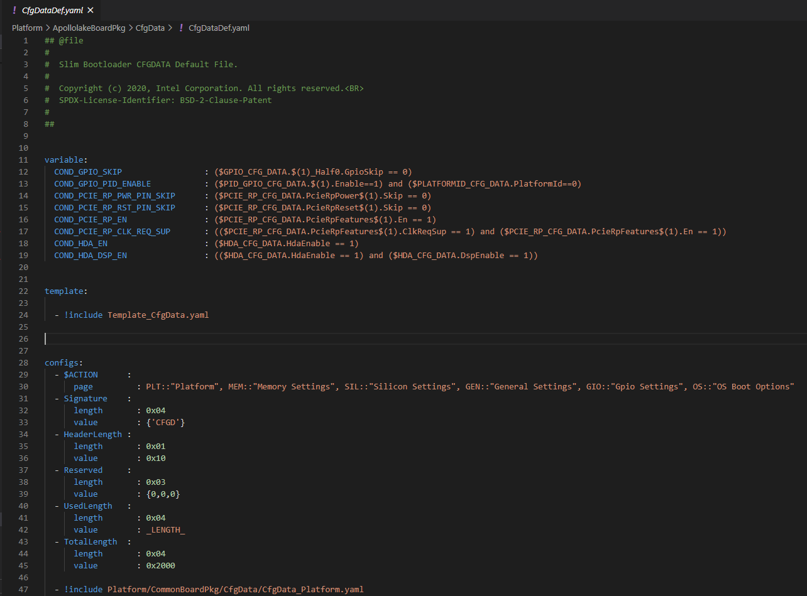
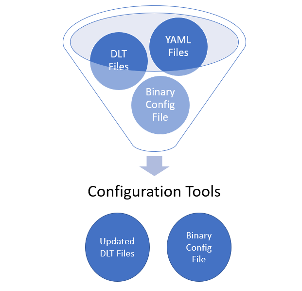
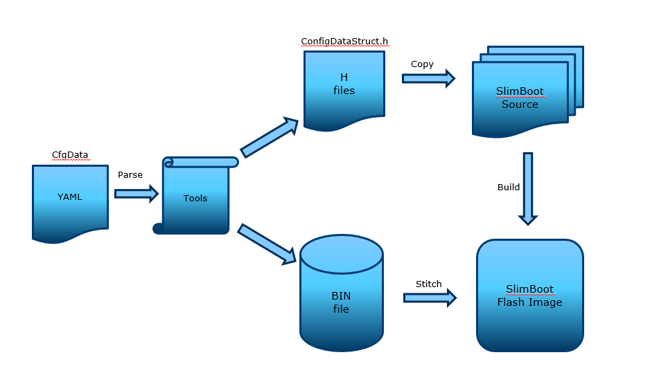
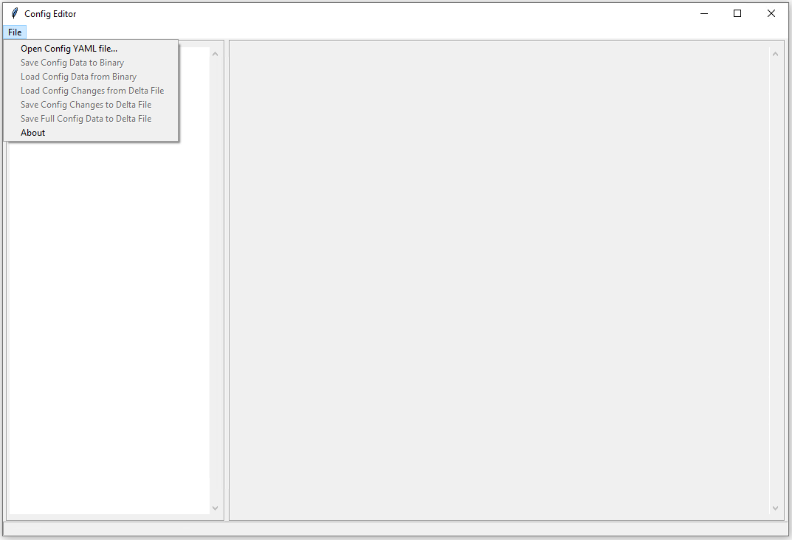
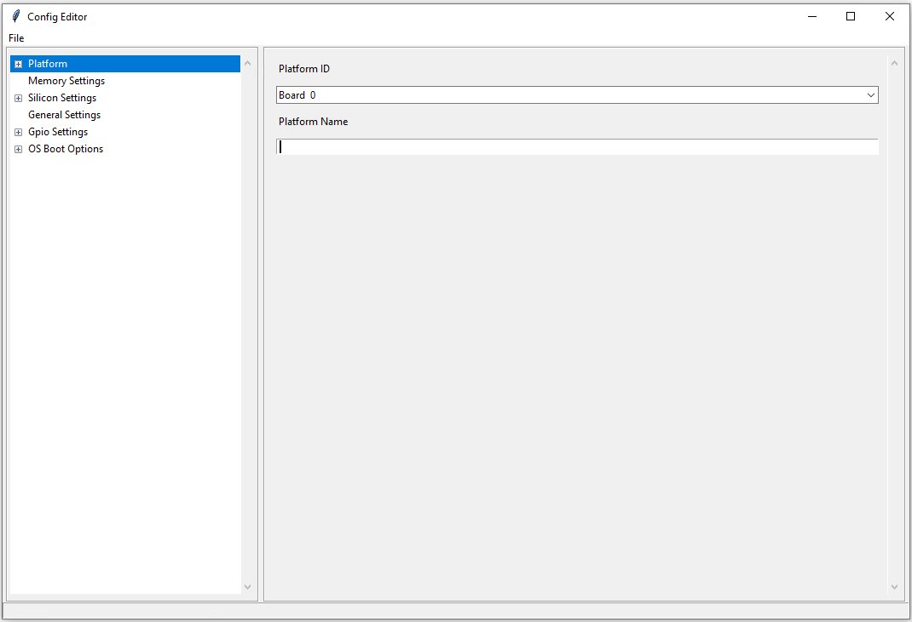

Configuration
Ease of platform and board customization is one of the most important design goal of creating SBL. It has many benefits from both system perspective and business use cases. For example,
By using a centralized configuration infrastructure code, it is easier to manage all configuration related data in all boot stages in the same way
Because configuration data is packed into a central region in SBL image, it is easier to customize these changes, or add security protection, or optimize its footprint.
By defining a standardized human readable configuration format, it is easier to create tools to provide user interface to manage many platform configurations.
SBL has two sets of configuration data in the image
- Internal configuration data
Software default values. It is unchangeable once SBL is built. In case of external configuration data is not available or corrupted, internal data is loaded instead.
- External configuration data
Platform specific data which is configurable by tools. It can be protected with user provided key.
SBL configuration infrastructure includes the following and is designed to support multiple boards with one firmware image.
Configuration declarations in YAML files
Configuration deltas in DLT files
Configuration tools
YAML Files
All platform configuration settings including memory, silicon, GPIO, OS boot policy, security settings etc are declared in a custom format and uses YAML Syntax (SBL Configuration).
YAML configuration files, in general are located in project specific board folder, while some common configuration files are located at PlatformCommonBoardPkgCfgData.
For example, you can find the configuration files for Apollo Lake platform under PlatformApollolakeBoardPkgCfgData folder.
Please note that you may find many YAML files. However, only CfgDataDef.yaml is the primary file used for the platform configuration, and other sub YAML files will be included by the primary YAML file to provide component specific configuration.
The main platform configuration file is specified in CfgDataDef.yaml. An example configuration file in YAML syntax is provided below.
DLT Files
DLT (delta) files are used to provide overrides to settings in YAML files to address board-level differences, including GPIO, boot policy, PCIE configuration, security settings etc.
DLT files contain unique Platform ID, and build tools will apply the settings to firmware images based on the platform ID.
DLT file that overrides configuration parameters for all boards (board id 0) is also supported. A typical use case is in case of Platform ID as explained below.
DLT file can be generated in different ways:
Change any existing settings, and save it to DLT file with Configuration Editor Tool.
Load values from an existing binary file, and then save the changes as DLT file.
A project may include multiple DLT files to handle multiple boards and are included in the project’s BoardConfig.py file as below. self._CFGDATA_EXT_FILE = [‘CfgData_Ext_Def.dlt’, ‘CfgData_Ext_Gpmrb.dlt’]
Configuration Flow
During SBL build, the configuration data in the YAML files are parsed by the configuration tools to generate the header files as well as the configuration binary. In addition to generating and stitching of configuration binaries through SBL build process, editing of configuration parameters post build is also supported.
Post-build configuration update can be done with the project’s configuration YAML/DLT files and the updated configuration binary can be restitched without having to rebuild SBL project. Please see Step-by-step Configuration Flow for details.
All the configuration tools required by the configuration process can be found under BootloaderCorePkg/Tools folder.
Configuration Editor Tool
SBL supports a Configuration Editor Tool (ConfigEditor.py) to configure firmware settings with graphics UI. This tool is included in SBL source package at BootloaderCorePkg/Tools.
 Platform ID
Note
Platform ID and board ID are used interchangeably in this section
SBL uses platform ID to select the associated configuration data. The platform ID can be specified at build time or dynamically detected from GPIO pins at runtime. At the beginning of Stage 1B (GetBoardIdFromGpioPins()), SBL attempts to load GPIO platform ID by tag CDATA_PID_GPIO_TAG. If the tag is found, the actual platform ID value is read from the GPIO pins. Otherwise, SBL uses static platform ID.
SBL supports up to 32 platform IDs. Note that Platform ID 0 served to carry the default CFGDATA values defined in the CfgDataDef.yaml file. So it cannot be used for a real board. So technically, SBL can support upto 31 boards.
Note
In addition to board specific delta files, a DLT file that overrides configuration parameters for all boards (board id 0) is also supported. If platform ID needs to be configurable without source, DLT file for board ID 0 is required. This is useful when common board settings are to be changed without changing the platform configuration YAML file.
Platform Configuration Files
Platform ID Configuration
Provide platform ID (1-15) value in board configuration file (*.dlt):
PLATFORMID_CFG_DATA.PlatformId | 0x7
Platform ID Detection using GPIOs
Configure designated 4 GPIO pins in board configuration file using Configuration Editor.
Provide platform ID value (0-15) in board configuration file (
*.dlt):
PLATFORMID_CFG_DATA.PlatformId | 0x9
Note
Internally, SBL adds 16 to Platform ID detected using GPIOs in order not to conflict with static IDs.
Common Configuration Categories
SBL comes with commonly used configurable options for a given platform. One can add new configurations (Platform/<platform_foo>/CfgData/*.yaml) and Stage 1B board specific code (Platform/<platform_foo>/Library/Stage1BBoardInitLib/)
Configuration data are grouped by categories:
GPIO
More details on GPIO configuration are given in the GPIO Configuration section below
Memory and eMMC tuning
Graphics related
Device related (USB, eMMC etc)
Security
Boot options
Feature related (e.g., log level)
…
Configuration data is loaded and verified in Stage1B. Once loaded, SBL groups related configuration item by tags and the data can be retrieved by calling function FindConfigDataByTag(). For example, CDATA_USB_TAG.
Step-by-step Configuration Flow
Users will need to have the following prerequisites to begin the flow.
Files
Top-level YAML file, CfgDataDef.yaml, and Internal/External .DLT files.
Default configuration data, CfgDataInt.bin and/or CfgData_Default.dlt
RSA key file.
Tools
CfgDataStitch.py, CfgDataTool.py, ConfigEditor.py, GenCfgData.py
Process
Load:
Open ConfigEditor GUI tool, ConfigEditor.py.
Load top-level CfgDataDef.yaml file. Now the platform settings with default values are shown in the ConfigEditor.
Load board-specific DLT file (e.g., CfgData_Ext_Up2.dlt, and so on). Once this is loaded, ConfigEditor will display the overwritten values as specified in the DLT file.
Change values:
If user choose to change additional settings, it can be done at this time either in the DLT file directly or using ConfigEditor. For a different platform, make sure to set/modify the platform ID value accordingly. Then save the changes back into the DLT file (or) it can also be saved as a binary file using ConfigEditor. New DLT file or new binary that is created will then have the newly changed settings.
Stitch into final image:
Open a command window and cd into the location of the CfgDataStitch.py folder.
Run this Python* script in the command window: CfgDataStitch.py -h for parameters for this script.
Example:
python CfgDataStitch.py -i sbl_ifwi_old.bin -k ConfigTestKey_Priv_RSA3072.pem -s SblOpen\BootloaderCorePkg\Tools -c . -o sbl_ifwi_patched.bin -p <<platform ID>>
Once the above script is run successfully, the new configuration data is patched and the new IFWI image has been created.
Boot:
Users can now flash the new image that contains the changed configuration values onto the board, then boot to SBL shell and check boot options that are changed with the new values.
Note
An example pre build configuration flow to configure GPIOs can be found here https://slimbootloader.github.io/how-tos/configure_gpio.html#gpio-config-data
Note
An example post build configuration flow to configure Boot Options can be found here https://slimbootloader.github.io/how-tos/change-boot-option.html#change-at-post-build-time
Example Console Outputs
External configuration data for board (platform 1) is loaded:
============= Intel Slim Bootloader STAGE1B =============
...
BoardID: 0001
Load External Cfg data...BIOS
Load EXT CFG Data @ 0xFEF05FF8:0x0080 ... Success
HASH Verification Success! Component Type (4)
RSA Verification Success!
...
Load Security Cfg Data
...
Load Memory Cfg Data
...
Load Graphics Cfg Data
...
GPIO Configuration
GPIO / CFIO
Modern chipsets pack multiple functions and are often constrained by the package size and limited number of pins. These Configurable IO (CFIO) pins need to be configured at boot time to connect them to selected functionality based on platform designs.
The selected functionality could be a General Purpose IO (GPIO) or some other alternative function (SPI, I2C, etc.)
General Purpose IO (GPIO) is a digital signal pin and can be configured to be either an input or an output signal. GPIO pins offer flexibility to platform designers and can be used for a variety of purposes. For example, a laptop lid may be connected to a gpio pin to signal when the lid is closed and can be used to turn on/off the display. Another example of a GPIO is to drive a status LED on the chassis. A very good primer on GPIO can be found here - https://www.kernel.org/doc/html/latest/driver-api/gpio/intro.html#what-is-a-gpio.
GPIO Configurability
SBL provides an user friendly interface to ease configuration of GPIO/CFIO through its configuration infrastructure. The goal of Slim Bootloader’s configuration mechanism is to customize a given reference implementation to another board with as minimal code changes as possible.
This requires a reference implementaion to expose all GPIO as configurable options. This includes not just those CFIO pads used for GPIO functionality, but also those used by other controllers like SPI, I2C, etc.. This provides maximum flexibility in terms of which GPIOs are used for board designs. When a specific CFIO is not used as GPIO, initialization of that pad by the GPIO initialization module may not be needed and a mechanism to skip that is needed. Slim Bootloader configuration provides this mechanism throuh the SKIP flag as part of a GPIO configuration. When the SKIP flag is set, the configurability for that GPIO may also be hidden by the GUI tool using the SKIP flag as a conditional variable.
SBL projects provide a reference board GPIO setup as the baseline configuration. As explained above, this base GPIO table includes configuration for all pins present on the SoC. A custom design may differ from this baseline implementation. Thus, an ability to override entries in the base configuration is also provided through delta GPIO tables. To optimize for space, a design approach of not duplicating the entire GPIO table for each board was adopted. Instead of duplicating the entire GPIO table for each delta configuration, the CfgDataTool tool will optimize the configuration binary blob to only have a base GPIO table that includes configuration for all pins present on the SoC plus delta tables that override entries from the base table.
Each GPIO table will include a GPIO table bitmask that will indicate if the GPIO entry from the base table will be used for configuration or if it will be skipped. A GPIO Configuration from the base table can be skipped either (1) If it is used for native function and may be be initialized by the silicon code or (2) If it is overridden by the delta configuration and will be configured from the delta table. The GPIO table bitmask will be updated by the CfgDataTool.
Users should customize the GPIO/CFIO configuration to match their hardware designs. Refer to GPIO / CFIO Configuration for a step-by-step guide.
Processing of GPIO configurations
CfgDataTool is responsible for processing the GPIO configuration described in the YAML and delta files.
The
CfgData_Gpio.yamlfile contains the GPIO table for Platform ID 0.The
CfgData_Gpio.yamldefines aGPIO_CFG_HDRfollowed by a number of GPIO configuration entries for Platform ID 0 (refer to Platform ID for more details)This is the Base Table for a number of boards using the same SoC (board IDs 1 - 31).
The
GPIO_CFG_HDRincludes fields that specify the Item Count, Item Size, Base Table BitMask, etc.One of the fields in the
GPIO_CFG_HDRisGpioBaseTableIdwhich refers to a Base Table. TheGpioBaseTableIdinCfgData_Gpio.yaml(for platform ID 0) should be set to0xFFand will be processed by the tool (see below).
The delta YAML files will contain configurations for GPIO pins that are to be configured differently than the base table. Or if desired, it is also fine to provide a full GPIO pin configurations.
The configuration for each pin is described using 2 DWORDS. The explanation for fields within the DWORDS can be found in the platform’s GPIO configuration template.
Processing of base GPIO table (
CfgData_Gpio.yaml):The tool creates a Base GPIO table with
GPIO_CFG_HDRfollowed by a number of GPIO configuration entries.The tool updates the
BaseTableBitMaskin theGPIO_CFG_HDR. Each bit in the bitmask specifies if a pin will be configured or not. 1 = configured, 0 = skipped.The entire base GPIO table will be present in the final configuration binary
Processing of the delta table (dlt files):
The tool creates a delta GPIO table for a specific platform ID. The delta table will have
GPIO_CFG_HDRfollowed by the configuration for GPIO pins that are to be configured differently than the base GPIO table.The tool updates the
GpioBaseTableIdto refer to the GPIO Table for Platform ID 0.The tool parses the delta table and updates the
BaseTableBitMaskif a GPIO pin is present in both the base table and the delta table, and their configuration values are different, the base table entry is skipped and the entry from the delta table is used for configuring the GPIO.
Slim Bootloader GPIO initialization module will first locate the GPIO table for that particular platform (identified by the Platform ID) and then use the
GpioBaseTableIdin itsGPIO_CFG_HDRto locate the Base GPIO Table. The GPIO table for that specific platform is created by copying entries from the Base GPIO table filetered byBaseTableBitMaskand entries from the delta table appended at the end.For more information on GPIO configuration processing, you can refer to the CfgDataTool function
ProcessCfgArray()inCfgDataTool.py
Example configuration:
Let us consider a platform with 8 GPIO pins.
The base table is as follows
- !expand { GPIO_TMPL : [ GPP_A0 , 0x00000000, 0x00000010 ] } - !expand { GPIO_TMPL : [ GPP_A1 , 0x40000101, 0x00000011 ] } - !expand { GPIO_TMPL : [ GPP_A2 , 0x80000201, 0x00000012 ] } - !expand { GPIO_TMPL : [ GPP_A3 , 0xC0000301, 0x00000013 ] } - !expand { GPIO_TMPL : [ GPP_A4 , 0x00000400, 0x00000014 ] } - !expand { GPIO_TMPL : [ GPP_A5 , 0x40000500, 0x00000015 ] } - !expand { GPIO_TMPL : [ GPP_A6 , 0x80000601, 0x00000016 ] } - !expand { GPIO_TMPL : [ GPP_A7 , 0xC0000700, 0x00000017 ] }
The delta table for Platform ID 1 sets the skip flag for GPP_A1
GPIO_CFG_DATA.GpioConfPad1_GPP_A1.GPIOSkip | 1The tool will parse the base table and create the bitmask
0xFFas no pin is being skippedGpioBaseTableBitMask = 0xFF = 0b11111111The tool will then parse the delta table and clear the bit for GPP_A1 as it is skipped
GpioBaseTableBitMask = 0xFD = 0b11111101This bitmask will now be used by the Stage2 code to apply the configuration correctly.
The delta table for Platform ID 31 sets the skip flag for GPP_A1 and GPP_A6, and overrides configuation for GPP_A3, and GPP_A4
GPIO_CFG_DATA.GpioConfPad1_GPP_A1.GPIOSkip | 1 GPIO_CFG_DATA.GpioConfPad1_GPP_A6.GPIOSkip | 1 GPIO_CFG_DATA.GpioConfPad0_GPP_A3 | 0x40000801 GPIO_CFG_DATA.GpioConfPad1_GPP_A4 | 0x00050014
The tool will parse the base table and create the bitmask
0xFFas no pin is being skippedGpioBaseTableBitMask = 0xFF = 0b11111111The tool will then parse the delta table and clear the bits for GPP_A1, GPP_A6, and GPP_A3, GPP_A4
GpioBaseTableBitMask = 0xA5 = 0b10100101This bitmask will now be used by the Stage2 code to apply the configuration correctly.
The image below illustrates the above configuration: